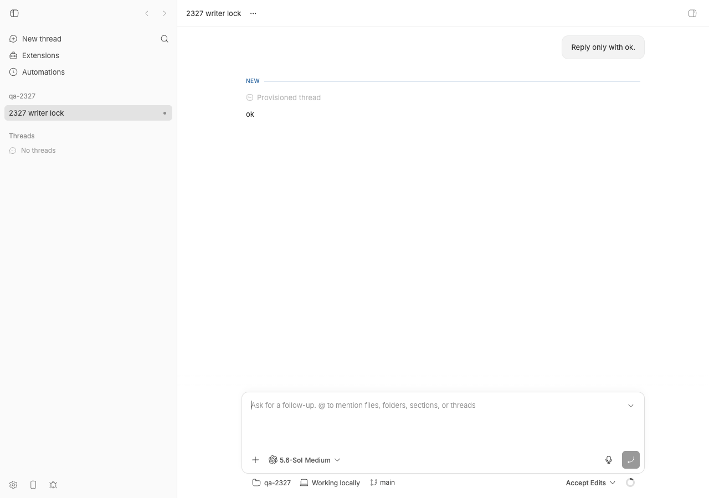
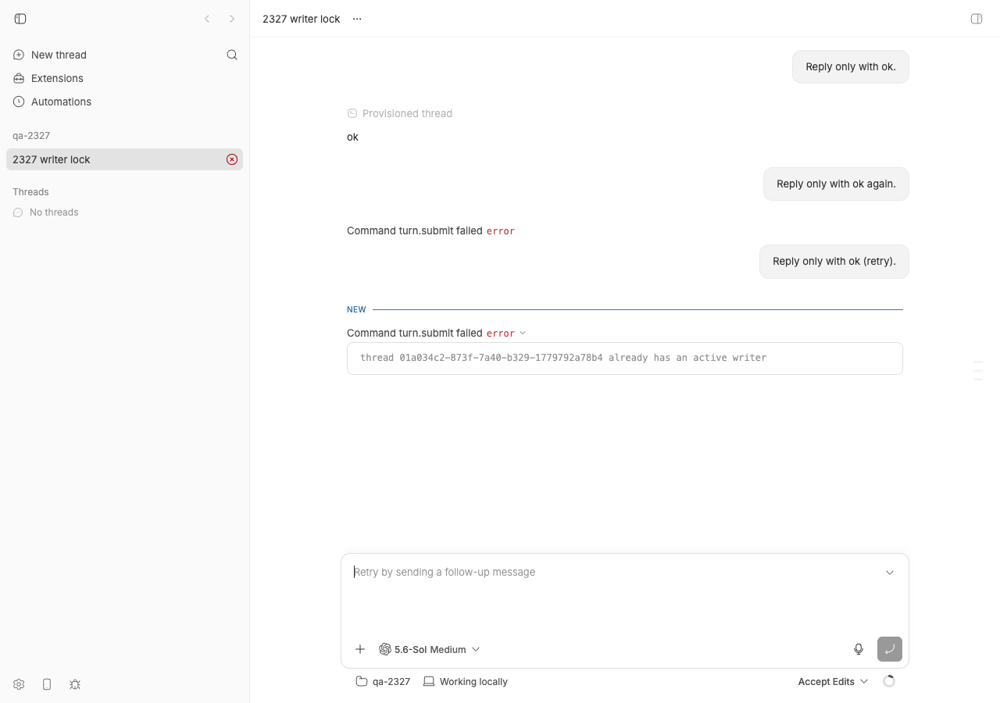
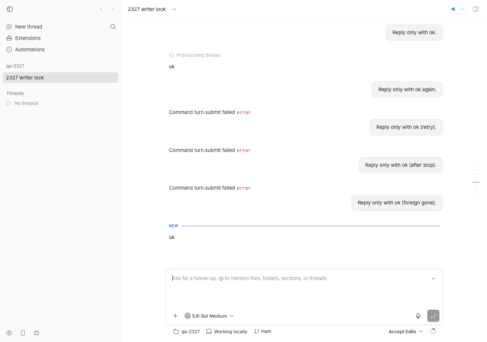

#2327 · turn/completed can precede command completion and wedge later turns between active-writer and no-session errors
Verdict: REPRODUCED (the wedge; not the "turn/completed before item/completed" ordering claim, which is a Codex-side observation bb records faithfully) · Root-cause confidence: high
1. TL;DR
Codex CLI 0.146+ takes a per-thread writer lock (an flock on $CODEX_HOME/thread-writer-locks/<codex-thread-id>.lock) whenever a codex app-server process loads a thread, and refuses any other process's thread/resume of that thread with thread <id> already has an active writer. bb's Codex bridge runs one codex app-server per bb thread and reopens the rollout with thread/resume after every release, settings-change rebuild, auth/rate-limit rebuild, bridge restart, or environment move. Whenever another app-server still has the thread loaded at that moment — a foreign client (Codex desktop app, codex resume, a second bb daemon sharing ~/.codex) or bb's own previous child that has not finished exiting — the resume is refused. bb treats that refusal as an untyped bridge error (recovery: null): the turn is rejected with client/turn/rejected + system/error, the thread goes to error, and "stop and retry" does not help because the next attempt resumes the same locked rollout again. In the bridge the reporter ran (before #2325, merged six minutes before the issue was filed), a failed rebuild additionally made the bridge forget the thread while the runtime still believed it had a live session, so the very next turn answered No active codex session for thread — the contradictory pair in the report. At the base commit the bridge still answers No active codex session for thread to a turn/start that follows a refused thread/resume (shown at the bridge level in 4c), but the base-commit runtime no longer issues that turn/start: it forgets the thread after the failed resume (abandonFailedSessionConstruction), so end to end every retry now reports "already has an active writer" only. The "active writer" half and the non-recovery are fully present at the base commit; the exact pair from the issue is reachable end to end only with the pre-#2325 bridge.
2. Claims vs findings
| Claim from the issue | Status | Evidence |
|---|---|---|
Later new-turn requests fail with thread <provider-thread> already has an active writer | Verified | Reproduced end to end on a dev instance (section 4, step 6) and at the bridge level (scenarios A and B). The text is Codex's own ThreadStoreError::Conflict from codex-rs/thread-store/src/local/writer_lock.rs; it does not exist anywhere in bb's source. |
… and also with No active codex session for thread <bb-thread> | Verified at bridge level; end to end only pre-#2325 (code trace) | Bridge-level scenario A (4c): after a refused thread/resume the bridge holds nothing for the thread, so a turn/start answers exactly this. The base-commit runtime does not send that turn/start — a rejected resume runs abandonFailedSessionConstruction (runtime.ts#L2107-L2116) and the next command resumes again, so the end-to-end run (4b, events 19–30) only ever shows "already has an active writer". Before #2325 the bridge itself reached this state from a plain settings-change rebuild (section 5.3), which matches the reporter's timing. |
| The two states are contradictory / the thread is wedged | Verified | They are two views of one fact: the rollout is loaded by a process bb does not own. Which message appears depends on whether the bridge still has an entry for the thread when the next request arrives; the pre-#2325 bridge dropped the entry after any failed rebuild, so a user there saw both texts in succession. |
| Stopping the runtime and retrying the exact input does not recover | Verified | Section 4, step 8: bb thread stop then bb thread tell --mode auto is rejected identically. Recovery only happened after the foreign app-server exited (step 9). |
| Provider retry refused because the input had not been accepted | Verified (code) | plugins/provider-retry/src/recovery.ts inspectFailedTurn returns input-not-accepted when the latest client/turn/requested has no turn/input/accepted; a rejected turn/start never produces one. |
| edit-message could not apply because the request was agent-origin | Verified (code) | apps/server/src/services/threads/thread-edit-message.ts:209 rejects request.initiator !== "user". |
turn/completed was emitted while a commandExecution item was still running; the item completed minutes later | Unverified | This is Codex app-server ordering. bb's translator maps turn/completed to a keyed turn.boundary and a later item/completed to a keyed item.close on the same vouched turn id (plugins/provider-codex/src/delta-translation.ts:978-1095, assembler delta-assembler.ts:1532), so bb records whatever order Codex emits. I could not make Codex produce this order on demand and it is not needed for the wedge: the writer lock is held for the life of the app-server process regardless of turn state (shown in codex-writer-lock.log: an idle thread, a thread mid-command, both refuse a second writer). |
| "Do not emit turn/completed until every item is terminal" (bb should delay the terminal event) | Refuted as the fix | Holding back turn/completed would not change the lock: a process holds the thread's writer lock from thread/start|resume until it exits, not only while a turn is running. The defect is in how bb (re)opens rollouts and how it classifies this refusal. |
| No bb version / Codex version given | Unverifiable | The issue carries no versions. It was filed 2026-08-24T04:40Z, six minutes after #2325 (e42a4ef48, 2026-08-23T21:34-0700) merged, so the reporter's bridge almost certainly predates #2325. Codex must be ≥ 0.146.0 (the writer lock landed in openai/codex@5c94796d, first shipped in rust-v0.146.0 on 2026-07-29). |
3. Environment
- bb
494f66526913557ab076e048218236f0a6610927(main, 2026-08-24);origin/mainhas no later commit touchingplugins/provider-codex,packages/agent-runtimeorapps/host-daemon(checked up to47643f5e2). - macOS 26.5.2 (Darwin 25.5, Apple Silicon), Node v22.23.1, pnpm.
- Codex CLI 0.149.1 (
@openai/codexnpm wrapper +codex-darwin-arm64native binary). Writer-lock source read fromopenai/codexmain (codex-rs/thread-store/src/local/writer_lock.rs,codex-rs/app-server/src/lib.rs). - Dev instance from this worktree (revise pass): app
http://localhost:17285, serverhttp://localhost:25285, host daemon127.0.0.1:33285, data dir~/.bb-dev/bb-machines-HOST.getbb.app-checkouts-bb-.claude-worktrees-wf_846839f8-f8a-36-f06effcd4c76(deleted after the run), hosthost_4mecev643h. Projectproj_bubq6jkc6won/tmp/bb-2327-e2e-repo, threadthr_dyn6jcqggc→ codex thread01a034dc-fdc9-73f0-a00d-a960e9b7cb4d. (The first pass used ports 13910/21910/29910, threadthr_n42gyd75j5; the independent verifier used ports 16350/24350/32350, threadthr_w95pxvdpna. All three runs produced the same event sequence 19–43.) - 4a and 4c use a scratch
CODEX_HOME=/tmp/bb-2327-codex-homewith~/.codex/auth.jsoncopied in (deleted afterwards) and the scratch working directory/tmp/bb-2327-repo. The dev-instance repro (4b) uses the machine's default~/.codex, as bb does in production.
4. Minimal reproduction
4a. Codex alone: the writer lock (no bb involved, ~15 s, two tiny turns)
Prerequisites: codex ≥ 0.146 on PATH (0.149.1 here) and a logged-in scratch CODEX_HOME. Phase A (the lock refusal) works without credentials; Phase B asks the model to run sleep 75, so it needs auth.json. The script creates CODEX_HOME and its working directory (REPRO_CWD, default /tmp/bb-2327-repo) itself.
- Two
codex app-serverprocesses sharing oneCODEX_HOME. P1 starts a thread and runs one turn; P2 triesthread/resumeon it.$ mkdir -p /tmp/bb-2327-codex-home && cp ~/.codex/auth.json /tmp/bb-2327-codex-home/ $ CODEX_HOME=/tmp/bb-2327-codex-home node /tmp/bb-reports/issues/2327/repro/codex-writer-lock.mjs --sleep 75 [+ 39ms] codex version: codex-cli 0.149.1 [+ 524ms] P1 thread/start -> thread 01a034da-b5af-7531-b20a-7e14edb14a7b [+ 4093ms] P1 <- turn/completed {"turn":"01a034da-b5ce-…","status":"completed"} [+ 4806ms] lock held by P1 (native binary pid): {"exists":true,"pids":[48689]} [+ 4857ms] P2 stderr: ERROR codex_core::session::session: failed to initialize thread persistence: thread-store conflict: thread 01a034da-b5af-7531-b20a-7e14edb14a7b already has an active writer [+ 4857ms] P2 thread/resume while P1 is alive -> error: thread 01a034da-b5af-7531-b20a-7e14edb14a7b already has an active writer [+ 4864ms] P1 exited 7ms after SIGTERM (code=0 signal=null) [+ 5220ms] P2 thread/resume after P1 died -> ok [+ 5391ms] P2 (idle) exited 8ms after stdin EOF (code=0 signal=null) … [+ 11977ms] P3 commandExecution started: "/bin/zsh -lc 'sleep 75'" (item exec-d713e1b5-…) [+ 12192ms] P4 thread/resume while P3 runs a command -> error: thread 01a034da-b5af-7531-b20a-7e14edb14a7b already has an active writer [+ 15287ms] P3 alive=false lockPids=[] P4 thread/resume=ok ← P3 exited 37 ms after its stdin closed exit=0Withoutauth.jsonthe same command still shows the Phase A refusal but Phase B ends with401 Unauthorizedand "model did not start a command in 120s" (exit 2; see the verifier's4a-literal-attempt2-noauth.log). The lock is anflockheld by the nativecodexbinary (lsofshows the pid) for as long as the process has the thread loaded, idle or mid-command. SIGTERM and stdin-EOF both release it within tens of milliseconds on 0.149.1 (also with an MCP server configured:codex-sigterm-with-mcp.log, 8–13 ms).
4b. bb end to end (dev instance, CLI + browser)
All commands run from the bb worktree at 494f66526 after pnpm install --frozen-lockfile --prefer-offline && pnpm exec turbo run build. Codex must be logged in under the machine's default ~/.codex (bb uses it in production). DATA_DIR is not exported by scripts/bb-dev-app env; derive it from status as shown. The unset BB_THREAD_ID … line matters: with a stale BB_THREAD_ID in the environment thread tell fails with HTTP 400: Sender thread is invalid.
- Create a scratch git repo, start a dev instance, and create a project on that repo (the host id comes from
machine list).$ mkdir -p /tmp/bb-2327-e2e-repo && git -C /tmp/bb-2327-e2e-repo init -q && git -C /tmp/bb-2327-e2e-repo commit -q --allow-empty -m init $ scripts/bb-dev-app current # prints App/Server/Host daemon URLs and the data dir; wait until it says "Dev session: running" $ eval "$(scripts/bb-dev-app env)"; unset BB_THREAD_ID BB_ENVIRONMENT_ID BB_THREAD_STORAGE $ DATA_DIR=$(scripts/bb-dev-app status | sed -n 's/^Data dir: //p') $ HOST_ID=$(pnpm bb:dev machine list 2>/dev/null | grep -o 'host_[a-z0-9]*' | head -1); echo $HOST_ID host_4mecev643h $ curl -s -X POST $BB_SERVER_URL/api/v1/projects -H 'content-type: application/json' \ -d "{\"name\":\"qa-2327\",\"source\":{\"type\":\"local_path\",\"path\":\"/tmp/bb-2327-e2e-repo\",\"hostId\":\"$HOST_ID\"}}" {"id":"proj_bubq6jkc6w","kind":"standard","name":"qa-2327", …} - Spawn a Codex thread and let its first turn finish.
$ pnpm bb:dev thread spawn --project proj_bubq6jkc6w --provider codex --permission-mode accept-edits --title "2327 writer lock" --prompt "Reply only with ok." --json { "id": "thr_dyn6jcqggc", … } $ pnpm bb:dev thread wait thr_dyn6jcqggc --timeout 120 Thread thr_dyn6jcqggc reached status idle.
Before: the thread is idle after one successful turn. - Find the Codex thread id and confirm bb's app-server child holds its writer lock.
$ sqlite3 "$DATA_DIR/bb.db" "select data from events where thread_id='thr_dyn6jcqggc' and type='thread/identity' limit 1;" {"providerThreadId":"01a034dc-fdc9-73f0-a00d-a960e9b7cb4d"} $ ls ~/.codex/thread-writer-locks/ | grep 01a034dc-fdc9 01a034dc-fdc9-73f0-a00d-a960e9b7cb4d.lock $ lsof -t -nP ~/.codex/thread-writer-locks/01a034dc-fdc9-73f0-a00d-a960e9b7cb4d.lock # bb's codex child 56625 - Release bb's session (what the 30-minute idle reaper in
apps/host-daemon/src/app.ts:65does on its own, or an explicit stop) — the lock is now free.$ pnpm bb:dev thread stop thr_dyn6jcqggc Thread thr_dyn6jcqggc stopped $ lsof -t -nP ~/.codex/thread-writer-locks/01a034dc-fdc9-73f0-a00d-a960e9b7cb4d.lock # (no output: free)
- Open the same rollout from a process bb does not own (this models the Codex desktop app,
codex resume <id>, or another bb daemon sharing~/.codex).$ node /tmp/bb-reports/issues/2327/repro/foreign-holder.mjs 01a034dc-fdc9-73f0-a00d-a960e9b7cb4d /tmp/bb-2327-e2e-repo & holding codex thread 01a034dc-fdc9-73f0-a00d-a960e9b7cb4d (app-server wrapper pid 58077); kill me to release $ lsof -t -nP ~/.codex/thread-writer-locks/01a034dc-fdc9-73f0-a00d-a960e9b7cb4d.lock 58078
- Send a follow-up. Expected: bb resumes the rollout and runs the turn (or tells the user who holds the thread and waits/retries). Actual: the turn is rejected, the thread flips to
error.$ pnpm bb:dev thread tell thr_dyn6jcqggc "Reply only with ok again." Thread thr_dyn6jcqggc steered $ pnpm bb:dev thread show thr_dyn6jcqggc --json | grep -m1 '"status"' "status": "error", $ sqlite3 "$DATA_DIR/bb.db" "select sequence,type,substr(data,1,300) from events where thread_id='thr_dyn6jcqggc' order by sequence desc limit 4;" 22|system/error|{"code":"thread_command_failed","message":"Command turn.submit failed","detail":"thread 01a034dc-fdc9-73f0-a00d-a960e9b7cb4d already has an active writer"} 21|client/turn/rejected|{"requestId":"creq_dvty6hcrfi","reason":"command_failed","message":"thread 01a034dc-fdc9-73f0-a00d-a960e9b7cb4d already has an active writer"} 20|thread/identity|{"providerThreadId":"01a034dc-fdc9-73f0-a00d-a960e9b7cb4d"} 19|client/turn/requested|{"direction":"outbound","source":"tell","initiator":"user","request":{"method":"turn/start","params":{}},"requestId":"creq_dvty6hcrfi", …}The host daemon logs the bridge rejection with"recovery": null— no typed hint, so the runtime has nothing to act on (dev log excerpt).
The moment the bug shows: "Command turn.submit failed — thread … already has an active writer". The thread is now in the error state (red icon in the sidebar). - Retry. The default (steer) mode is refused by the server because the thread is in
error;--mode autogoes through and is rejected identically (events 23–26).$ pnpm bb:dev thread tell thr_dyn6jcqggc "Reply only with ok (retry)." Error: HTTP 409: Thread is not active $ pnpm bb:dev thread tell thr_dyn6jcqggc "Reply only with ok (retry)." --mode auto Thread thr_dyn6jcqggc updated 25|client/turn/rejected|{"requestId":"creq_pvj42gm6w8","reason":"command_failed","message":"thread 01a034dc-fdc9-73f0-a00d-a960e9b7cb4d already has an active writer"} 26|system/error|{"code":"thread_command_failed","message":"Command turn.submit failed","detail":"thread 01a034dc-fdc9-73f0-a00d-a960e9b7cb4d already has an active writer"} - Stop the runtime and retry — the issue's recovery attempt — still rejected (events 27–30): the stop released nothing bb owned, and the retry resumes the same locked rollout.
$ pnpm bb:dev thread stop thr_dyn6jcqggc && pnpm bb:dev thread tell thr_dyn6jcqggc "Reply only with ok (after stop)." --mode auto Thread thr_dyn6jcqggc stopped Thread thr_dyn6jcqggc updated 29|client/turn/rejected|{"requestId":"creq_pcp3b4fvdm","reason":"command_failed","message":"thread 01a034dc-fdc9-73f0-a00d-a960e9b7cb4d already has an active writer"} 30|system/error|{"code":"thread_command_failed","message":"Command turn.submit failed","detail":"thread 01a034dc-fdc9-73f0-a00d-a960e9b7cb4d already has an active writer"} - Only the foreign process going away unwedges the thread.
$ pkill -f "foreign-holder.mjs 01a034dc-fdc9" $ pnpm bb:dev thread tell thr_dyn6jcqggc "Reply only with ok (foreign gone)." --mode auto && pnpm bb:dev thread wait thr_dyn6jcqggc --timeout 120 Thread thr_dyn6jcqggc updated Thread thr_dyn6jcqggc reached status idle. 35|turn/started|{"providerThreadId":"01a034dc-fdc9-73f0-a00d-a960e9b7cb4d"} 43|turn/completed|{"providerThreadId":"01a034dc-fdc9-73f0-a00d-a960e9b7cb4d","status":"completed", …}
After the foreign app-server exits the same thread works again; the three failed sends stay in the timeline as "Command turn.submit failed" errors and the fourth gets its "ok". (This shot is from the revise-pass run, thread thr_dyn6jcqggc; the two shots above are from the first run and show the identical states.)
Full event dump (events 19–43 of the revise-pass run): e2e-events-after-tell.txt. Cleanup afterwards: pnpm dev:stop, delete $DATA_DIR, rm -rf /tmp/bb-2327-*.
4c. bb bridge alone (vitest, real Codex, both halves of the contradiction)
repro/bridge.writer-lock-2327.test.ts drives handleLine of the real bridge with the repo's JSON-RPC test harness against the real codex app-server. It is not part of the repo: copy it into plugins/provider-codex/src/bridge/ of a built worktree first. It is gated on BB_2327_REPRO=1 because it spends two tiny real turns, needs the logged-in scratch CODEX_HOME from 4a, and takes the path of the slow-exit wrapper (scenario B) from BB_2327_SLOW_WRAPPER (default /tmp/bb-reports/issues/2327/repro/slow-exit-codex-wrapper.mjs; set it if you saved the repro files elsewhere). BB_2327_WORKSPACE (default /tmp/bb-2327-repo, created if missing) and BB_2327_TRANSCRIPT are optional.
$ cp /tmp/bb-reports/issues/2327/repro/bridge.writer-lock-2327.test.ts plugins/provider-codex/src/bridge/
$ cd plugins/provider-codex
$ BB_2327_REPRO=1 CODEX_HOME=/tmp/bb-2327-codex-home \
BB_2327_SLOW_WRAPPER=/tmp/bb-reports/issues/2327/repro/slow-exit-codex-wrapper.mjs \
BB_2327_TRANSCRIPT=/tmp/bridge-transcript.log \
pnpm exec vitest run src/bridge/bridge.writer-lock-2327.test.ts
Test Files 1 passed (1)
Tests 2 passed (2) # "passed" = the bug is present as asserted
Duration 20.97s
Scenario A (foreign holder) — the bridge transcript shows the exact pair from the issue:
[+ 3271ms] bb's child holds the writer lock: [49651]
[+ 3404ms] runtime -> bridge #3 thread/stop {"intent":"release", …}
[+ 3405ms] bridge -> runtime #3 result {"ok":true}
[+ 4284ms] foreign codex app-server pid=49876 resumed 01a034db-629c-…; lock holders [49877]
[+ 4423ms] runtime -> bridge #4 thread/resume {"threadId":"thr_2327_foreign","providerThreadId":"01a034db-629c-…", …}
[+ 6044ms] bridge -> runtime #4 ERROR {"code":-32000,"message":"thread 01a034db-629c-7b50-9769-1689461668e7 already has an active writer"}
[+ 6044ms] runtime -> bridge #5 turn/start {"threadId":"thr_2327_foreign", …} ← the harness sends this; the base-commit runtime would not (it forgot the thread after #4)
[+ 6046ms] bridge -> runtime #5 ERROR {"code":-32000,"message":"No active codex session for thread \"thr_2327_foreign\""}
[+ 6046ms] runtime -> bridge #6 thread/resume …
[+ 7645ms] bridge -> runtime #6 ERROR {"code":-32000,"message":"thread 01a034db-629c-7b50-9769-1689461668e7 already has an active writer"}
[+ 7645ms] foreign codex app-server killed
[+ 9568ms] bridge -> runtime #7 result {"providerThreadId":"01a034db-629c-…","sessionRestorable":true}
Scenario B (bb racing its own previous child) — a reasoning-level change is construction-scoped for Codex, so turn/start rebuilds the session. The wrapper delays the old child's SIGTERM by 1.5 s to model a teardown slower than the replacement's spawn + initialize + thread/resume (≈ 650 ms here):
[+ 10395ms] runtime -> bridge #10 turn/start {… "reasoningLevel":"low"} → ok, turn settles
[+ 13225ms] runtime -> bridge #11 turn/start {… "reasoningLevel":"high"} → rebuild: SIGTERM old child, spawn new, thread/resume
[+ 14271ms] bridge -> runtime #11 ERROR {"code":-32000,"message":"thread 01a034db-87e7-7461-bf02-57191f9fe74d already has an active writer"}
[+ 16773ms] runtime -> bridge #12 turn/start {… "reasoningLevel":"high"} → 2.5 s later, old child gone
[+ 17795ms] bridge -> runtime #12 result {"threadId":"thr_2327_rebuild"}
bridge notification session/replaced {"reason":"codex app-server exited; the session was restored from its rollout.", …}
At the base commit the retry succeeds because #2325 added registerResumableSession. The pre-#2325 rebuildThreadSession had no catch block (git show e42a4ef48^:plugins/provider-codex/src/bridge/bridge.ts lines 1094–1123): the failed construction deleted the thread's only entry, so every later turn/start answered No active codex session for thread until the runtime forgot the thread and resumed it again. (Running the old bridge.ts file against the current SDK is not possible — its schema imports moved in #2325 — so this half is traced in code, not executed.) Full transcript: bridge-transcript-base.log.
Repro files: 2327/repro/ — codex-writer-lock.mjs (4a), codex-sigterm-with-mcp.mjs + slow-mcp-server.mjs (teardown timing), foreign-holder.mjs (4b step 5), slow-exit-codex-wrapper.mjs (4c scenario B), bridge.writer-lock-2327.test.ts, logs.
5. Root cause
5.1 Codex: one writer per thread, per process lifetime
Since openai/codex@5c94796d ("Enforce single-writer ownership for paginated threads", shipped in rust-v0.146.0, 2026-07-29) the thread store acquires $CODEX_HOME/thread-writer-locks/<thread>.lock with File::try_lock() when a session is created for a thread and answers a second writer with ThreadStoreError::Conflict { "thread {id} already has an active writer" }; the guard is dropped only when the session is torn down (process exit). In stdio mode (single_client_mode, the mode bb uses) the app-server installs no SIGTERM drain and exits on stdin EOF after shutdown_threads(), which measured 5–45 ms on 0.149.1. Nothing in this is turn-scoped: an idle loaded thread is locked exactly like one mid-command.
5.2 bb reopens rollouts by spawning a new app-server, and never checks who holds the thread
The Codex bridge keeps one app-server child per bb thread and reconstructs the session through constructThreadSession for every start/resume/fork and every rebuild (bridge.ts#L1052-L1055):
const existing = sessionsByBbThreadId.get(args.threadId);
if (existing) {
releaseSession(existing); // SIGTERM the old child (SIGKILL only after 4 s), returns immediately
}
…
const connection = spawnChildConnection({ … }); // new app-server, right away
…
const result = await connection.request({ method /* thread/resume */, params, … });
releaseSession → connection.kill() (app-server-connection.ts#L341-L352) only sends the signal; nothing awaits the old child's exit/close before the replacement's thread/resume goes out. Every rebuild site goes through this: a construction-scoped settings change or a dead child (requireLiveSessionForTurn), a terminal auth/rate-limit error (rebuildBeforeNextTurnReason), a runtime-driven thread/resume while the bridge still has the session, and thread/stop {release} immediately followed by a resume (environment move via releaseThreadFromOtherEnvironments, runtime-manager.ts#L449-L491; the 30-minute idle reaper, app.ts#L65-L66, followed by a new turn; a restartRecommended bridge restart, runtime.ts#L1136-L1199). With 0.149.1's ~10 ms teardown the self-race window is small on an idle machine, but it is a race by construction, and it does not matter who the other writer is: any process that has the rollout loaded produces the same refusal.
5.3 bb classifies the refusal as a generic failure and leaves the thread inconsistent
- The bridge only recognises Codex's "is archived" text (CODEX_ARCHIVED_SESSION_ERROR_PATTERN) and turns it into a typed
sessionArchivedhint the runtime acts on. "already has an active writer" getsBRIDGE_ERRORwith no hint (sendConstructionError, bridge.ts#L1499-L1521), sosendRequestWithRecoveryin the runtime rethrows it (recovery: nullin the daemon log), the daemon answerscommand_failed, and the server appendsclient/turn/rejected+system/errorand moves the thread toerror. - Bridge and runtime disagree about who still holds the thread. After a rejected
turn/startthe runtime keeps the thread registered (runTurncatch only callsmarkHostedProviderSessionIdle, runtime.ts#L2185-L2193), whereas a rejectedthread/resumeforgets it (abandonFailedSessionConstruction, runtime.ts#L2107-L2116) so the next command resumes again. At the base commit this means an end-to-end user only ever sees "already has an active writer" (4b). The bridge, however, still answers "No active codex session" to anyturn/startthat reaches it after a refused resume (4c, #5), and before #2325 the bridge itself dropped the thread after any failed rebuild (no catch inrebuildThreadSession,git show e42a4ef48^:plugins/provider-codex/src/bridge/bridge.tslines 1094–1123) while the runtime kept it registered — so a single settings-change rebuild produced "active writer" once and then "No active codex session" on every subsequent turn, the pair the reporter saw. #2325'sregisterResumableSession(bridge.ts#L1242-L1266) closes that rebuild path; the bridge/runtime bookkeeping mismatch itself remains. - Nothing retries or waits. A transient holder (bb's own exiting child, a bridge that just restarted) would be gone within a second; a persistent holder (Codex desktop app,
codex resume, a second daemon on the same~/.codex) is never reported as such, so the user gets "Command turn.submit failed" with no actionable cause, and the provider-retry plugin refuses because no input was accepted.
Deeper issue: bb assumes a Codex rollout is re-openable at any time by any process. Since Codex 0.146 a rollout has exactly one writer, and bb neither serialises its own handoffs (old child → new child) on that invariant nor treats a foreign writer as a first-class state of the thread. The ordering observation in the issue (a command item completing after turn/completed) is orthogonal; it would not cause or prevent this failure.
6. Proposed fix (first principles)
- Bridge: never resume while bb's own previous writer can still be alive. In
constructThreadSession, when anexistingsession has a live connection, await the old connection's finalized exit (it already escalates SIGTERM → SIGKILL at 4 s) before spawning the replacement; do the same inhandleThreadStop {release}before answering, so a runtime that chains release → resume (environment move, bridge restart) cannot race. Cost: up to the kill-escalation timeout once, on an already-dying child. Risk: a child that never closes its pipes — the connection'sCLOSE_AFTER_EXIT_GRACE_MSalready bounds that. - Bridge: classify the conflict. Add
/\bthread\s+\S+\s+already has an active writer\b/inext to the archived pattern and map it to a typed recovery hint (e.g.sessionBusy,retryable: true, with the Codex thread id). The runtime'sactOnRejectioncan then retry the construction a bounded number of times with backoff (covers bb's own transient holders and a desktop app that is just closing), and otherwise surface a typedAgentRuntimeRecoveryErrorso the server records a specificsystem/error("this Codex thread is open in another program") instead ofthread_command_failed, and the thread can stayidlewith the input queued rather than flipping toerror. This is a wire change: bumpHOST_DAEMON_PROTOCOL_VERSIONand document the hint indocs/provider-bridge-protocol.md. - Runtime: make the two paths agree. After a rejected
turn/startwhose rejection carries a construction-failure hint, forget the thread the same way a rejectedthread/resumedoes, so the next send always goes through resume (one error text, one recovery) and "No active codex session" cannot appear for this cause. Optionally, have the bridge report the lock holder's pid fromlsof-free means (Codex does not expose it; the lock file is empty), so keep the message generic. - Tests. Extend
fake-codex-app-server.mjswith a scripted "active writer" refusal (first N resumes fail) and add bridge tests for: (a) rebuild waits for the old child, (b) the typed hint and bounded retry, (c) release → resume on the same thread. Keep the real-Codex test in this report as an opt-in integration check.
Not recommended: delaying turn/completed until items settle (the issue's first expectation). It changes nothing about the lock and would hold bb turns open for Codex background processes.
7. PR review
No open pull request is linked to this issue.
8. Related issues
- #2325 — "Provider plugins: one API for Codex, Claude Code, pi, and ACP agents" (
e42a4ef48): addedregisterResumableSession, which removes the pre-existing "forget the thread after a failed rebuild" half of this report. Merged six minutes before the issue was filed. - #2242 — "Prevent competing turns and false Codex session rebuilds": fewer spurious rebuilds means fewer chances to hit the self-race, but the remaining rebuild sites are unchanged.
- #1584 (release must not fabricate an interruption), #1402 (stale child output), #130 (rebuild after auth failure) — the rebuild/release machinery this report exercises.
- openai/codex #34986 — the Codex change that introduced the writer lock.
9. Appendix
Commands run (in order)
gh issue view 2327 --repo get-bb/bb --json … pnpm install --frozen-lockfile --prefer-offline && pnpm exec turbo run build strings …/codex-darwin-arm64/…/bin/codex | grep -n "active writer" # message is Codex's, not bb's gh api repos/openai/codex/contents/codex-rs/thread-store/src/local/writer_lock.rs -H "Accept: application/vnd.github.raw" gh api "repos/openai/codex/commits?path=codex-rs/thread-store/src/local/writer_lock.rs" # 5c94796d 2026-07-23 gh api repos/openai/codex/compare/5c94796d...rust-v0.146.0 --jq .status # ahead → contained in 0.146.0 gh api repos/openai/codex/contents/codex-rs/app-server/src/lib.rs … # single_client_mode, stdio close path lsof -nP ~/.codex/thread-writer-locks/*.lock # flock held by the codex binary mkdir -p /tmp/bb-2327-codex-home && cp ~/.codex/auth.json /tmp/bb-2327-codex-home/ CODEX_HOME=/tmp/bb-2327-codex-home node repro/codex-writer-lock.mjs --sleep 75 CODEX_HOME=/tmp/bb-2327-codex-home-mcp node repro/codex-sigterm-with-mcp.mjs cp repro/bridge.writer-lock-2327.test.ts plugins/provider-codex/src/bridge/ && cd plugins/provider-codex BB_2327_REPRO=1 CODEX_HOME=/tmp/bb-2327-codex-home BB_2327_SLOW_WRAPPER=repro/slow-exit-codex-wrapper.mjs pnpm exec vitest run src/bridge/bridge.writer-lock-2327.test.ts git show e42a4ef48^:plugins/provider-codex/src/bridge/bridge.ts | sed -n 1085,1135p # pre-#2325 rebuild has no catch git fetch origin main; git log 494f66526..origin/main --oneline -- plugins/provider-codex packages/agent-runtime apps/host-daemon # empty git -C /tmp/bb-2327-e2e-repo init; scripts/bb-dev-app current; DATA_DIR=$(scripts/bb-dev-app status | sed -n 's/^Data dir: //p'); pnpm bb:dev machine list curl … /api/v1/projects; pnpm bb:dev thread spawn/wait/stop/tell …; sqlite3 "$DATA_DIR/bb.db" … node repro/foreign-holder.mjs 01a034dc-fdc9-73f0-a00d-a960e9b7cb4d /tmp/bb-2327-e2e-repo sed -e 's#__URL__#http://localhost:17285/projects/proj_bubq6jkc6w/threads/thr_dyn6jcqggc#' -e 's#__SHOT__#…png#' repro/shot.js | doobie --headless # screenshots pnpm dev:stop; rm -rf "$DATA_DIR" /tmp/bb-2327-*
Codex writer lock (excerpt of writer_lock.rs on openai/codex main)
match file.try_lock() {
Ok(()) => {}
Err(std::fs::TryLockError::WouldBlock) => {
return Err(ThreadStoreError::Conflict {
message: format!("thread {thread_id} already has an active writer"),
});
}
…
}
impl Drop for WriterLockGuard { fn drop(&mut self) { … drop(self.file.take()); fs::remove_file(&self.path) … } }
Codex app-server shutdown in stdio mode (lib.rs)
let single_client_mode = matches!(&transport, AppServerTransport::Stdio);
let graceful_signal_restart_enabled = runtime_options.install_shutdown_signal_handler && !single_client_mode;
…
if single_client_mode && stdio_closed { break "stdio_connection_closed"; }
…
processor.drain_background_tasks().await;
processor.shutdown_threads().await;
Daemon log at the rejection (dev instance)
@bb/host-daemon:dev: [10:42:09] WARN: [host-daemon] online host RPC failed {"serverUrl":"http://127.0.0.1:25285","type":"turn.submit"}
@bb/host-daemon:dev: err: {
@bb/host-daemon:dev: "type": "JsonRpcResponseError",
@bb/host-daemon:dev: "message": "thread 01a034dc-fdc9-73f0-a00d-a960e9b7cb4d already has an active writer",
@bb/host-daemon:dev: …at handleStdoutLine (packages/agent-runtime/src/runtime.ts:1463:7)
@bb/host-daemon:dev: "code": -32000,
@bb/host-daemon:dev: "recovery": null,
@bb/host-daemon:dev: }
@bb/host-daemon:dev: [10:42:09] DEBUG: [host-daemon] Online host RPC {"commandType":"turn.submit","errorCode":"command_failed","handlerMs":675.8,"ok":false}
@bb/server:dev: [10:42:09] WARN: [server] Live ready turn command failed {"threadId":"thr_dyn6jcqggc"}
Measured Codex teardown times (0.149.1, this machine)
| Situation | Signal | Process exit | Writer lock released |
|---|---|---|---|
| idle thread, no MCP | SIGTERM | 4–7 ms (exit code 0) | < 250 ms poll |
| idle thread, no MCP | stdin EOF | 8–45 ms | with exit |
thread mid sleep 75 command | stdin EOF | 22–37 ms (command killed: exec_command failed … UnknownProcessId) | with exit |
| thread with a SIGTERM-ignoring MCP server | SIGTERM / stdin EOF | 8 ms / 13 ms | 157 ms / 25 ms (lsof poll granularity) |
bb's replacement child needs ≈ 70 ms to spawn + initialize and ≈ 650 ms for thread/resume on a fresh rollout, so on this Codex build bb only races itself under load; older Codex builds and foreign clients are the realistic triggers. Raw logs: codex-writer-lock.log, codex-sigterm-with-mcp.log, phase-a.log (first attempt; shows thread/resume needs a persisted rollout: "no rollout found for thread id").
Things ruled out
- A Codex child inheriting the lock fd into its sandboxed command (would make the lock outlive the app-server): Rust opens files
O_CLOEXEC;lsofon a live app-server's child (node_repl) shows no lock fd. - Codex lingering after its bridge dies (orphan holder): stdin EOF exits within 45 ms even mid-command on 0.149.1.
- A later commit on
origin/mainfixing this: none touch the relevant packages after494f66526(re-checked in the revise pass up to21cb6b68b; the only later commits inplugins/provider-codex,packages/agent-runtime,apps/host-daemon,apps/serverare test-only stabilizations).
Verification
An independent verifier re-ran every step on its own worktree (b735da19e, identical to 494f66526 for the packages involved) and dev instance (ports 16350/24350/32350): 4a reproduced once the scratch cwd and a logged-in CODEX_HOME existed; 4b reproduced end to end (thread thr_w95pxvdpna, events 19–30 all "already has an active writer", recovery after killing the foreign holder); 4c passed 2/2 with the same transcript. All code permalinks were checked against 494f66526 and found accurate. Its artifacts are under 2327/verify/.
Findings and what changed in this revision:
- Major — 4a did not work as written (the script's default cwd and the scratch
CODEX_HOMEdid not exist; Phase B needs auth).codex-writer-lock.mjsnow creates both directories, refuses~/.codexasCODEX_HOME, and warns whenauth.jsonis missing; the step lists themkdir+cp auth.jsonprerequisite. Re-run from scratch at494f66526: output above andcodex-writer-lock.log(overwritten in place). - Minor — 4b placeholders: the step now creates the scratch git repo, derives
DATA_DIRfromscripts/bb-dev-app status, and reads the host id frompnpm bb:dev machine listinstead of a hard-coded id. Re-run on a fresh dev instance from this worktree; all ids, outputs, the event dump, the daemon log excerpt and the "recovered" screenshot were replaced with that run (the event sequence numbers 19–43 came out identical to the first run). - Minor — "No active codex session" overstated at the base commit: the TL;DR, the claims table and section 5.3 now say that the bridge answers it to a
turn/startafter a refused resume (4c), that the base-commit runtime no longer sends that request becauseabandonFailedSessionConstructionforgets the thread, and that the end-to-end pair is only reachable with the pre-#2325 bridge (code trace). - Minor — 4c prerequisites: the step now includes the
cpof the test intoplugins/provider-codex/src/bridge/, theBB_2327_SLOW_WRAPPER/BB_2327_WORKSPACEoverrides and the auth requirement; the test file's header says the same. Re-run:vitest-writer-lock-base.log(2 passed) andbridge-transcript-base.log, both overwritten in place.